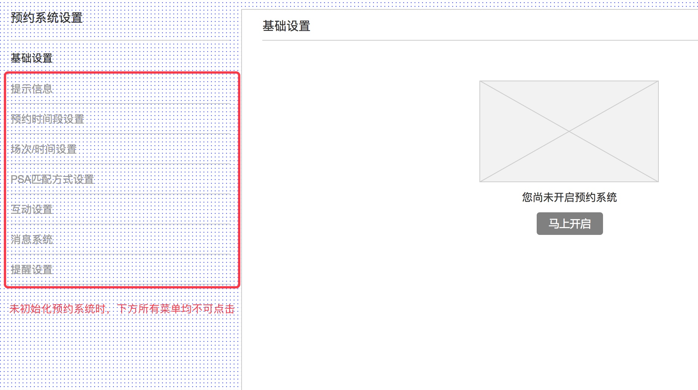

Match Making会谈预约系统产品需求文档
| 文件编号 | 作者 | 文档版本 | 最后修改日期 |
|---|---|---|---|
| MM-PRD | 周勤 | V1.0.0 | 2017/9/11 |
当前版本号：V1.0.0
修订控制
| 编号 | 文档版本 | 修订章节 | 修订原因 | 修订内容 | 修订人 |
|---|---|---|---|---|---|
| 1 | V1.0.0 | 创建 | 2017/9/11 | 周勤 |
目录
1. 产品概述
1.1 名词说明
| 名称 | 说明 |
|---|---|
| Match Makin预约系统 | Match Making预约系统是为了促进展会中展商和买家能够尽可能多地成功达成商业协议而生的匹配系统 |
| 完美配对 | 展商和买家互相选择了对方的情况 |
| 买家优先 | 买家向展商发出了邀约的情况 |
| 展商优先 | 展商向买家发出了邀约的情况 |
1.2 产品概述及目的
Match Making展会商业会谈预约系统是为了促进展会中展商和买家能够尽可能多地成功达成商业协议而生的匹配系统，会谈预约系统能够在展前3-6个月内就将所有的展商与买家进行匹配搓合，并约定洽谈时间，在展会现场，买家可以根据自己的约谈日程表前往展商的展台进行商业洽谈，减少了买卖双方在展会中的时间浪费，使约谈更有效率，时间更紧凑。
Match Making展会商业会谈预约系统将预约分为三个不同的阶段：1. PSA(Pre-Scheduling Appointment)展前预约阶段；2. OD(Online Diary)在线互动阶段；3. BMS现场商务约谈安排阶段。
在PSA阶段，展商和买家互相选择一批想要约见的对象，PSA阶段截止后，系统会按照设定的顺序（完美配对 => 买家优先 => 展商优先，买家和展商的顺序可在后台调整）自动匹配商务约谈时间。
在OD阶段，展商和买家可以通过在线互动补全剩余的商务约谈空档。在线互动平台将给买家和展商在管理商务约谈日程安排上更大的自由度，展商和买家可以在在线互动平台系统上看到来自对方的预约邀请，并通过选择一个共同的空档向对方发出商务约谈邀请。
在BMS阶段，展商和买家可以通过现场的买家-约见-卖家（BMS）系统来针对现场出现的意外情况对约谈行程做最后的补充和调整。
1.3 产品风险
风险级别说明：非常高的，高的，适度的，低的，非常低的
| 风险 | 风险级别 | 描述 | 监控策略 | 改善策略 |
|---|---|---|---|---|
2. 功能需求
2.1 功能总览
预约系统基本模块 - 功能总表
优先级说明：
- P1: 优先级最高，必须完成
- P2: 中等优先级，碰到无法解决的问题时可以延后
- P3: 优先级低，在工期紧张时可以延后
| 名称 | 描述 | 优先级 | 备注 |
|---|---|---|---|
| 1. 预约系统设置 | 开启展会预约系统 | P1 | 引导用户创建角色、通道及角色规则，单会组提供接口，PSA开发团队调接口创建 |
| 增加两种固定的角色：展商/买家 | P1 | 这两种角色必须要通过展会预约系统创建，无法手动创建，创建好后，用户可以修改角色名称 | |
| 预约系统基础设置 | P1 | 设置是否开启预约系统，以及三个阶段的起止时间 | |
| 编辑首页提示信息 | P1 | 需要给出提示信息编辑提示，或默认提示 | |
| 设置场次/时间 | P1 | 设置现场约谈的天数、每天上下午的起止时间以及每一场的时间长度 | |
| 设置PSA阶段匹配优先规则 | P1 | 完美匹配永远优先，可选买家优先或展商优先 | |
| 互动设置 | P2 | 是否开通展商和买家之间的互动消息 | |
| 消息系统：查看消息 | P3 | 查看展商和买家之前互相发送的消息 | |
| 消息系统：查看系统消息 | P1 | 查看自己向展商和买家发送的消息 | |
| 消息系统：发送系统消息 | P1 | 向展商和买家发送消息 | |
| 2. 展商/买家报名/预约 | 展商/买家报名后给他们打上各自角色的标签 | 已有功能 | |
| 3.预约系统 | 预约系统入口 | P1 | 报名后进行，网站进行，微站进行（模块） |
| 展前预约：选择预约对象 | P1 | 展商/买家各自选择预约对象 | |
| 展前预约：系统根据选择结果自动匹配 | P1 | 根据选择结果，时间/场次进行自动匹配，生成买卖双方的预约日程 | |
| 我的简介 | P1 | 显示展商/买家的报名信息 | |
| 查看对方公司信息 | P1 | 弹窗形式查看对方信息 | |
| 我的预约：预约日程 | P1 | 显示展商/买家当前的预约日程 | |
| 我的预约：下载打印预约日程 | P1 | 下载日程表以及展会平面图（一一对应） | |
| 我的预约：收到的请求 | P1 | 查看我收到的预约请求，同意/拒绝请求 | |
| 我的预约：发出的请求 | P1 | 查看我发出的预约请求，撤回请求 | |
| 我的预约：我拒绝的请求 | P1 | 查看我找拒绝的请求，可以重新发送或者删除 | |
| 我的预约：拒绝我的请求 | P1 | 查看对方拒绝我的请求，可以重新发送或者删除 | |
| 预约：选择了我的买家 | P1 | 查看在PSA阶段选择了我的买家/展商，再次预约可以直接预约成功 | |
| 预约：所有买家 | P1 | 在所有买家中筛选查找预约对象 | |
| 我的消息：收件箱 | P1 | 显示我收到的系统消息或普通消息 | |
| 我的消息：发件箱 | P1 | 显示我发出去的消息 | |
| 我的消息：发消息 | P1 | 向别人发送消息 | |
| 4.主办方后台管理 | |||
| 5.现场签到 |
2.2 功能详情
2.2.1 展会预约系统设置
2.2.1.1 开启展会预约系统
- 简要说明
开启展会预约系统功能用于初始化预约系统所需要的数据，包括参会人的展商和买家角色以及角色对应的规则，展商及买家通道。
业务规则
- 在未初始化预约系统时，会议中不存在展商/买家角色以及角色规则
- 在未初始化预约系统时，预约系统中的其他设置都无法使用（禁用）
- 选择使用通道定义展商/买家角色
- 第二步有两个选项：“使用通道定义展商/买家角色规则”，“自定义角色规则”，默认为“使用通道定义展商/买家规则”
- 选择“使用通道定义展商/买家角色规则”时，系统将自动为用户创建通道、角色以及设置角色规则，创建完成后将跳回设置页面
- 选择“自定义角色规则”时，系统将自动为用户创建角色，并跳转到角色设置页面。
角色设置页面交互：从预约设置页面进入角色设置页面时，需要带上参数，角色设置页面判断参数并引导设置展商/买家角色规则，设置完成后引导返回“预约系统设置”
在未初始化预约系统时，预约系统中的其他设置都无法使用（禁用）
角色设置页面引导
 

2.2.1.2 增加两种固定的角色
- 简要说明
单会参会人角色中增加两种固定的角色类型：展商和买家，这两种角色类型仅用于实现预约系统中的特殊业务逻辑。
业务规则
- 在未初始化预约系统时，单会系统中不存在这两种角色，且这两种角色无法手动创建，必须通过初始化预约系统进行创建
- 这两种角色可以在创建成功后修改其名称，但并不影响实际使用，由于预约系统中将会使用这两个角色名称，所以修改名称会影响前台显示
2.2.1.3 预约系统基础设置
- 简要说明
基础设置主要包括是否开启预约系统，以及设置三个不同阶段的起止时间
业务规则
- 开启/关闭预约系统仅控制展商和买家在个人中心中是否能够看到预约系统的菜单，不涉及任何预约数据的变动
- 预约系统初始化完成后，默认处于开启状态
- 三个阶段的起止时间只需要精确到分钟
- PSA阶段开始时间没有任何限制，可以选择任何时间；结束时间必须晚于开始时间，且与OD阶段的开始时间必须间隔2小时以上，即结束时间必于早于OD阶段开始时间减去2小时，当OD阶段开始时间为空时，PSA阶段则没有任何限制。
- OD阶段开始时间必于晚于PSA阶段结束时间2小时后，OD阶段结束时间必须早于或等于BMS开始时间。
- BMS阶段开始时间默认为会议开始时间，结束时间默认为会议结束时间，BMS开始时间不能早于OD结束时间。
- 修改BMS阶段的开始和结束时间时，如果“场次/时间”尚未设置，则需要同步更新“场次/时间”设置中的开始和结束日期。
2.2.1.4 编辑首页提示信息
- 简要说明
首页提示信息显示在预约系统的首页，主要是文本内容
业务规则
- 首页提示信息分为中文和英文信息
- 中文信息为必填，英文信息为选填
中文和英文需要提供默认文案
- 默认文案(待翻译)：
1) PSA Appointment Schedule
If you have participated in our Pre-Scheduled Appointment (PSA) exercise, your PSA appointment preferences have been matched.
You can click on the "My Appointments" tab to view your appointment schedule.
The exhibitors' and buyers' PSA selections have been matched using our computerised matching system according to the following order:
(1) Perfect Matches: Both Exhibitor and Buyer have requested to meet each other (2) Buyer's Preference: Buyer has requested to meet the Exhibitor
(3) Exhibitor's Preference: Exhibitor has requested to meet the Buyer
Up to 60% of your appointment slots are pre-scheduled in the above manner.2) Using The Online Diary
You can use the Online Diary to fill up your remaining appointment slots by arranging additional appointments directly with the Buyers.
Simply click on the "Make Appointment" tab to search for the additional buyers you would like to meet and request an appointment by selecting a free time slot in the buyer’s schedule. Please take note that you can only make a maximum of 3 cancellations once the appointment has been CONFIRMED (whether matched during PSA or Online Diary Stage). Unlimited cancellations can still occur for PENDING appointments from buyers or suppliers.
At the same time, you can use the Online Diary to answer appointment requests from buyers. You can view your appointment requests from buyers under the "My Appointments" tab. The number in the "My Appointments (#)" tab reflects the number of new appointment requests which are awaiting your acceptance.
Please note that all appointment request(s) will be automatically cancelled if you are not able to respond within 72 hours. Please ensure that you log in regularly to the Online Diary to view and answer appointment requests from buyers.
Under the "My Message" tab, you can view and send messages to the buyers. This gives you the opportunity to communicate with the buyers prior to IT&CM China 2016.
Exhibitors can rate buyers by accessing the "Rate Buyers" tab. This will allow us to ensure the quality of the show by providing you with quality buyers. This function will open at the end of the event, and close by 30th June 2016.3) On-site Appointment Scheduling Session
There will be a Buyers-Meet-Sellers (BMS) on-site appointment scheduling session on 7 April 2016, 0930 – 1000hrs
The session will offer both exhibitors and buyers the flexibility of making appointments with the other party whom they wish to meet at the last minute or whom they were not successfully matched.
2.2.1.5 设置场次/时间
- 简要说明
场次/时间设置主要设置现场约谈的起止日期，每天的开始和结束时间以及每场约谈的时长，并能过这些设置计算出每天的约谈场次时间段。
业务规则
- 现场约谈默认开始时间为会议开始时间，默认结束日期为会议结束时间。
- 修改BMS阶段的开始和结束时间时，如果“场次/时间”尚未设置，则需要同步更新“场次/时间”设置中的开始和结束日期。
- 修改场次/时间中的日期，不会反向影响基础设置中BMS阶段的开始和结束时间。
- “场次/时间”中的开始日期必须晚于或等于OD阶段的结束日期。
- 现场约谈日期确定后，下方自动按日期生成每天上午和下午的开关，用户可以自己选择是否开启或关闭某个时间段。
- 默认上午开始时间为09:00，上午结束时间为12:00；下午开始时间为13:00，下午结束时间为18:00。
- 上午的开始时间和结束时间不得晚于12:00，且上午结束时间不得早于上午的开始时间。
- 下午开始时间不得早于上午的结束时间，下午结束时间不得早于下午的开始时间，下午结束时间不得晚于每天的00:00
- “启用午餐时间”：默认开启，启用午餐时间后，会将上午结束时间到下午开始时间之间的时间也设置为一个时间段，可针对该时间段开放预约。
- 启用午餐时间时，如果某一天的上午或下午被禁用，则不生成该天的午餐时间段。
- 每场约谈时长默认为20分钟，限制为大于0的正整数。
- 点击“开始设置”，按上述设置生成约谈时间段。
2.2.1.6 设置PSA阶段匹配优先规则
- 简要说明
使用该设置可以确定在PSA阶段结束后，系统自动匹配的规则。
业务规则
- 完美匹配永远排在第一位，无法更改其匹配顺序
- 如果选择了买家优先，则在完美匹配后优先匹配买家选择了展商的预约数据
如果选择了展商优先，则在完美匹配后优先匹配展商选择了买家的预约数据
- 匹配算法
2.2.1.7 互动设置
- 简要说明